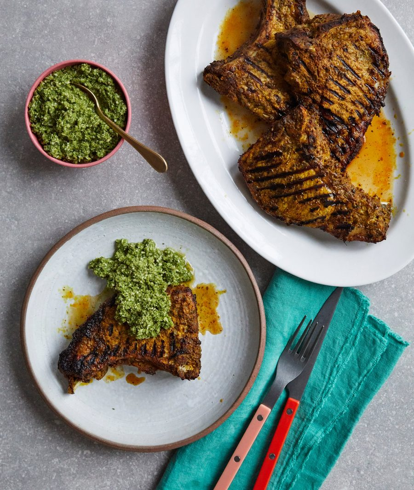

Spicy yoghurt pork chops with coconut, mint, coriander and lime sambal

This Indian spiced yoghurt marinade doesn’t just add incredible flavour to the chops, it makes them beautifully tender, too.
For the marinade
For the sambal
To make the sambal, simply blend all the ingredients together in a food processor to make a smooth paste, adding a little water if necessary. Refrigerate until needed.
Make the marinade by blending the coriander, mint, garlic, ginger and chilli together in a food processor till you have a smooth paste. Put the yoghurt and tomato puree into a bowl and fold in the blended paste. Add the spices, season with salt and pour in the lime juice and mix till well combined. Slather all over the chops and leave to marinade for at least 5 hours but preferably overnight.
Heat the oven to 220C (200C fan)/425F/gas 7 and put a griddle pan on a high heat. Once the pan is hot, grill the chops for 90 seconds on each side, until they have good char lines, then transfer to a baking tray and roast for about five – seven minutes, depending on thickness, until the meat is just cooked. Leave to rest for five minutes before serving with the sambal.